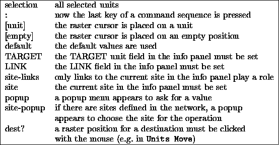
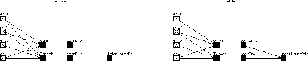
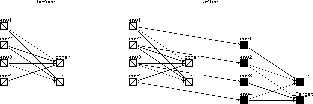
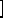

We now describe the editor commands in more detail. The description has the following form that is shown in two examples:
Links Make Clique (selection LINK : site-popup)
First comes the command sequence ( Links Make Clique) which is invoked by pressing the keys L, M, and C in this order. The items in parentheses indicate that the command depends on the objects of a previous selection of a group of units with the mouse (selection), that it depends on the value of the LINK field in the info panel, and that a site-popup appears if there are sites defined in the network. The options are given in their temporal order, the colon ':' stands for the moment when the last character of the command sequence is pressed, i.e. the selection and the input of the value must precede the last key of the command sequence.
Units Set Activation (selection TARGET :)
The command sequence Units Set Activation is invoked by pressing the keys U, S, A, in that order. The items in parentheses indicate that the command depends on the selection of a group of units with the mouse (selection) which it depends on the value of the TARGET field and that these two things must be done before the last key of the command sequence is pressed.
The following table displays the meaning of the symbols in parenthesis:

In the case of a site-popup a site for the operation can be chosen from this popup window. However, if one clicks the DONE button immediately afterwards, only the direct input without sites is chosen. In the following description, this direct input should be regarded as a special case of a site.
All newly generated units are assigned to all active layers in the display in which the command for their creation was issued.
The following keys are always possible within a command sequence:
A detailed description of the commands follows:
If the SAFETY-Flag is set, then with every operation which deletes units, sites or links ( Units Delete ... or Links Delete ...) a confirmer asks if the units, sites or links should really be deleted. If the flag is set, this is shown in the manager panel with a safe after the little flag icon. If the flag is not set, units, sites or links are deleted immediately. There is no undo operation for these deletions.
All link weights between the selected units are set to the value of the LINK field in the info panel.
A full connection between all selected units is generated. Since links may be deleted selectively afterwards, this function is useful in many cases where many links in both directions are to be generated.
If a site is selected, a complete connection is only possible if all units have a site with the same name.
 unit
unit : site-popup)
: site-popup)
Links Make to Target unit (selection  unit
unit : site-popup)
: site-popup)
Both operations connect all selected units with a single unit under the mouse pointer. In the first case, this unit is the source, in the second, it is the target. All links get the value of the LINK field in the info panel.
If sites are used, only links to the selected site are generated.
All unidirectional links become double (bidirectional) links. That is, new links in the opposite direction are generated. Immediately after creation the new links possess the same weights as the original links. However, the two links do not share the weight, i.e. subsequent training usually changes the similarity.
Connections impinging on a site only become bidirectional, if the original source units has a site with the same name.
All unidirectional links between all selected units change their direction. They keep their original value.
Connections leading to a site are only reversed, if the original source unit has a site of the same name. Otherwise they remain as they are.
Links Delete from Source unit (selection  unit
unit : site-popup)
: site-popup)
Links Delete to Target unit (selection  unit
unit : site-popup)
: site-popup)
These three operations are the reverse of Links Make in that they delete the connections. If the safety flag is set (the word safe appears behind the flag symbol in the manager panel), a confirmer window forces the user to confirm the deletion.
 unit
unit :)
:)
Links Copy Output (selection  unit
unit :)
:)
Links Copy All (selection  unit
unit :)
:)
Links Copy Input copies all input links of the selected group of units to the single unit under the mouse pointer. If sites are used, incoming links are only copied if a site with the same name as in the original units exists.
Links Copy Output copies all output links of the selected group of units to the single unit under the mouse pointer.
Links Copy All Does both of the two operations above
 unit
unit :)
:)
This is a rather complex operation: Links Copy Environment tries to duplicate the links between all selected units and the current TARGET unit in the info panel at the place of the unit under the mouse pointer. The relative position of the selected units to the TARGET unit plays an important role: if a unit exists that has the same relative position to the unit under the mouse cursor as the TARGET unit has to one of the selected units, then a link between this unit and the unit under the mouse pointer is created.
The result of this operation is a copy of the structure of links between the selected units and the TARGET unit at the place of the unit under the mouse pointer. That is, one obtains the same topological structure at the unit under the mouse pointer.
This is shown in figure  . In this figure the
structure of the TARGET unit and the four Env units is
copied to the unit UnderMousePtr. However, only two units
are in the same relative position to the UnderMousePtr as
the Env units are to the Target unit, namely
corrEnv3 corresponding to Env3 and corrEnv4 corresponding
to Env4. So only those two links from the units corrEnv3
to UnderMousePtr and from corrEnv4 to
UnderMousePtr are generated.
. In this figure the
structure of the TARGET unit and the four Env units is
copied to the unit UnderMousePtr. However, only two units
are in the same relative position to the UnderMousePtr as
the Env units are to the Target unit, namely
corrEnv3 corresponding to Env3 and corrEnv4 corresponding
to Env4. So only those two links from the units corrEnv3
to UnderMousePtr and from corrEnv4 to
UnderMousePtr are generated.

A site which is chosen in a popup window is added to all selected units. The command has no effect for all units which already have a site of this name (because the names of all sites of a unit must be different)
The site that is chosen in the popup window is deleted at all selected units that possess a site of this name. Also all links to this site are deleted. If the safety flag is set (in the manager panel the word safe is displayed behind the flag icon at the bottom), then a confirmer window forces the user to confirm the deletion first.
Sites Copy with All links (selection SITE :)
The current site of the Target unit is added to all selected units which do not have this site yet. Links are copied together with the site only with the command Site Copy with All links. If a unit already has a site of that name, only the links are copied.
These commands are used to freeze or unfreeze all selected units. Freezing means, that the unit does not get updated anymore, and therefore keeps its activation and output. Upon loading input units change only their activation, while keeping their output. For output units, this depends upon the setting of the pattern load mode. In the load mode Output only the output is set. Therefore, if frozen output units are to keep their output, another mode ( None or Activation) has to be selected. A learning cycle, on the other hand, executes as if no units have been frozen.
Units Set Initial activation (selection TARGET :)
Units Set Output (selection TARGET :)
Units Set Bias (selection TARGET :)
Units Set io-Type (selection : Popup)
Units Set Function Activation (selection : Popup)
Units Set Function Output (selection : Popup)
Units Set Function F-type (selection : Popup)
Sets the specific attribute of all selected units to a common value. Types and functions are defined by a popup window. The operations can be aborted by immediately clicking the DONE button in the popup without selecting an element of the list.
The list item special_X for the command Units Set io-Type makes all selected units special while keeping their topologic type, .i.e.: a selected hidden unit becomes a special-hidden, a selected output becomes a special-output unit. The list item non-special_X performs the reverse procedure.
The remaining attributes are read from the corresponding fields of the Target unit in the info panel. The user can of course change the values there (without clicking the SET button) and then execute Units Set .... A different approach would be to make a unit target unit (click on it with the middle mouse button) which already has the desired values. This procedure is very convenient, but works only if appropriate units already exist. A good idea might be to create a couple of such model units first, to be able to quickly set different attribute sets in the info panel.
 default :)
default :)
Units Insert Target ( empty
empty TARGET :)
TARGET :)
Units Insert F-type ( empty
empty : popup)
: popup)
This command is used to insert a unit with the IO-type hidden. It has no connections and its attributes are set according to the default values and the Target unit. With the command Units Insert Default, the unit gets no F-type and no sites. With Units Insert F-type an F-type and sites have to be selected in a popup window. Units Insert Target creates a copy of the target unit in the info panel. If sites/connections are to be copied as well, the command Units Copy All has to be used instead.
All selected units are deleted. If the safety flag is set ( safe appears in the manager panel behind the flag symbol) the deletion has to be confirmed with the confirmer.
All selected units are moved. The Target unit is moved to the position at which the mouse button is clicked. It is therefore recommended to make one of the units to be moved target unit and position the mouse cursor over the target unit before beginning the move. Otherwise all moving units will have an offset from the cursor. This new position must not be occupied by an unselected unit, because a position conflict will result otherwise. All other units move in the same way relative to that position. The command is ignored, if:
It might happen that units are moved beyond the right or lower border of the display. These units remain selected, as long as not all units are deselected (click the right mouse button to an empty grid position).
As long as no target is selected, the editor reacts only to Return, Quit or Help. Positioning is eased by displaying the unit outlines during the move. The user may also switch to another display. If this display has a different subnet number, the subnet number of the units changes accordingly. Depending upon layer and subnet parameters, it can happen that the moved units are not visible at the target.
If networks are generated externally, it might happen that several units lie on the same grid position. Upon selection of this position, only the unit with the smallest number is selected. With ``Units Move'' the user can thereby clarify the situation.
This command is similar to Units Move. Copy creates copies of the selected units at the positions that would be assigned by Move. Another difference is that if units are moved to grid positions of selected units the command is ignored. The units created have the same attributes as their originals, but different numbers. Since unit types are copied as well the new units also inherit the activation function, output function and sites. There are four options regarding the copying of the links. If no links are copied, the new unit has no connections. If, for example, the input links are copied, the new units have the same predecessors as their originals.
Units Copy Structure All
Units Copy Structure Input
Units Copy Structure Output
Units Copy Structure None
Units Copy Structure ... binding (selection : dest? site-popup)
Units Copy Structure Back binding
Units Copy Structure Forward binding
Units Copy Structure Double binding
These commands are refinements of the general Copy command. Here, all links between the selected units are always copied as well. This means that the substructure is copied form the originals to the new units. On a copy without Structure these links would go unnoticed. There are also options, which additional links are to be copied. If only the substructure is to be copied, the command Units Copy Structure None is used.

The options with binding present a special feature. There, links
between original and copied units are inserted automatically, in
addition to the copied structure links. Back, Forward and
Double specify thereby the direction of the links, where
``back'' means the direction towards the original unit. An example is
shown in picture  . If sites are used, the
connections to the originals are assigned to the site selected in the
popup. If not all originals have a site with that name, not all new
units are linked to their predecessors.
. If sites are used, the
connections to the originals are assigned to the site selected in the
popup. If not all originals have a site with that name, not all new
units are linked to their predecessors.
With these various copy options, large, complicated nets with the same or similar substructures can be created very easily.
Switches to the mode Units or Links. All sequences of the normal modes are available. The keys U and L need not be pressed anymore. This shortens all sequences by one key.
Returns to normal mode after executing Mode Units.
These commands initiate redrawing of the whole net, or parts of the net. With the exception of Graphics Complete, all commands affect only the current display. They are especially useful after links have been deleted.
 unit
unit : )
: )
This command assigns arrowheads to all links leading to/from the unit selected by the mouse. This is done independently from the setup values. XGUI, however, does not recall that links have been drawn. This means that, after moving a unit, these links remain in the window, if the display of links is switched off in the SETUP.
 empty
empty /
/ unit
unit :)
:)
The origin of the window (upper left corner) is moved in a way that the target unit in the info panel becomes visible at the position specified by the mouse.
 empty
empty /
/ unit
unit
:)The position specified by the mouse becomes new origin of the display (upper left corner).
This command draws a point at each grid position. The grid, however, is not refreshed, therefore one might have to redo the command from time to time.